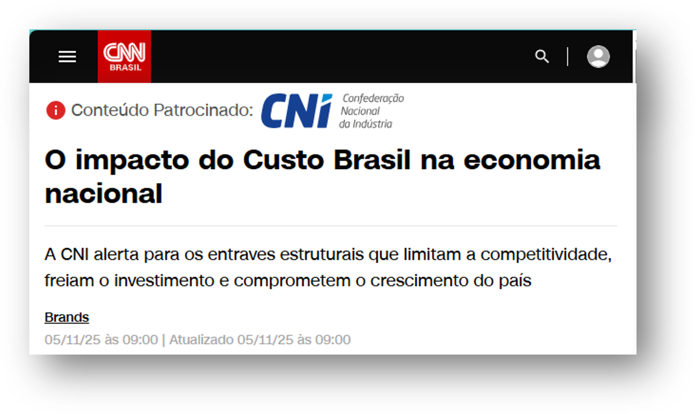
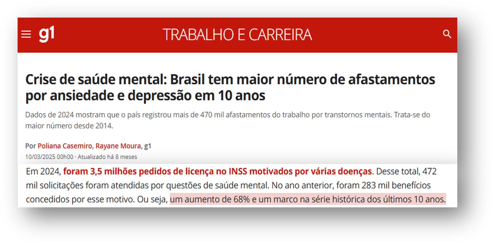

Descomplicamos o desenvolvimento humano no trabalho
Somos uma consultoria de negócios com foco em Desenvolvimento Humano, nascida da experiência holística de sua fundadora em grandes multinacionais e no empreendedorismo.
Nossa missão
Ajudar pessoas e negócios a alinhar objetivos através do desenvolvimento humano prático, aplicado a realidade com clareza, método e execução, para gerar resultados sustentáveis.
O que nos move
Integramos dados, métodos e desenvolvimento humano para transformar conflitos em oportunidades para potencializar performance com a qualidade de vida.
Para quem
carreira, repertório e execução com método
diagnóstico, estratégia e desenvolvimento organizacional
projetos em conjunto e alavancas de impacto
Lisandra Lencina

Vive o empreendedorismo desde a juventude e há 10 anos ajuda pessoas e negócios a alinharem seus interesses e resultados.
Formações: Administração de Empresas, MBA em Gestão de Negócios, Especialização em RH e Coaching.
Desenvolvimento através de atitudes coerentes
Ajudamos pessoas e negócios a alcançar objetivos por meio do desenvolvimento humano aplicado, com atitudes coerentes, para gerar e impulsionar resultados sustentáveis.
NOSSAS ATITUDES E VALORES
O desafio do cenário atual
O futuro do trabalho é complexo porque a maioria das dores não é técnica, é humana. O desafio é cuidar do invisível: expectativas, confiança e coerência.
Empresários afirmam que falta de mão de obra qualificada compromete o crescimento.

Aumento de pedidos de licenças no INSS por saúde mental em 10 anos.

50% dos trabalhadores acreditam que o Autodesenvolvimento ajudaria a atingir seus objetivos pessoais
Top 3 ações para alcançar objetivos segundo os trabalhadores
contaria com a ajuda do RH ou líder para se desenvolver, acreditam que a companhia não os ajudará.
dos negócios focam na aquisição de novos clientes e cansa e aumento de receita orgânica.
Reconheceram que as maiores barreiras são pessoas e comunicação desafiadora, e saída de profissionais chaves.
Fonte: DHO360
Consequências da falta de desenvolvimento humano
Os efeitos da falta de desenvolvimento humano reflete no desempenho do negócio e na experiência do trabalhador.
NOS NEGÓCIOS
NOS TRABALHADORES
Desenvolvendo e sustentando estratégias de pessoas
Atuamos em consultoria e serviços em três frentes que vão do técnico ao humano, dos dados às pessoas, com foco no desenvolvimento de pessoas e negócios.
de carreira
Parcerias que agregam competências, escala e integração
Atuamos em rede para ampliar impacto quando faz sentido. Conectamos especialistas e soluções com escopo claro, ritmos de acompanhamento e métricas simples para garantir execução com qualidade e consistência.
Conheça alguns de nossos parceiros
Se você representa uma solução, consultoria ou comunidade que acredita em desenvolvimento humano aplicado ao trabalho, vamos conversar para explorar sinergias.
Por que escolher a LENS?
O que faz diferença é transformar conhecimento em prática com coerência, foco e consistência.
Do técnico ao humano
Integramos dados, método e desenvolvimento humano para transformar diagnóstico em decisão e ação.
Desenvolvimento em cada interação
O desenvolvimento começa no primeiro contato e continua durante a entrega e no pós: cada conversa vira conhecimento, prática e evolução.
Foco em demanda real (e compromisso real)
Trabalhamos com objetivos que têm contexto e intenção de execução: "quero X, não sei como, não tenho tudo hoje, mas vou construir o caminho".
Adaptação contínua ao cenário
Ferramentas e abordagens personalizadas, ajustadas ao que o cliente vive e ao que a operação permite, sem perder consistência.
Vamos começar a descomplicar o desenvolvimento humano no seu contexto de trabalho?